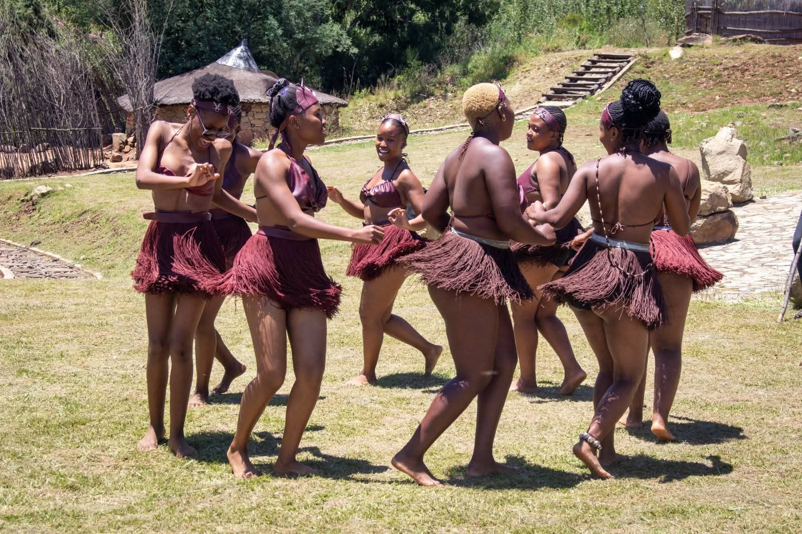

1. A Journey Through the Maluti Mountains
As I rode a Basotho pony through the Maluti Mountains, I felt completely free. The fresh mountain air and endless views made it an unforgettable adventure.
The locals were welcoming, and I learned about their traditions and way of life. This experience made me appreciate the beauty of rural Lesotho.
2. The Power of Maletsunyane Falls
Standing at the edge of the Maletsunyane Falls in Semonkong was both exciting and breathtaking. The sound of the water crashing down is powerful and unforgettable.
For adventure lovers, abseiling down the falls is a once-in-a-lifetime experience.


3. Cultural Experience in a Basotho Village
I visited Basotho Cultural village at Thaba-Bosiu Maseru, where I experienced Basotho culture first-hand. From local food to traditional dress, everything was authentic.
The people shared stories, music, and dances that made the experience truly special.